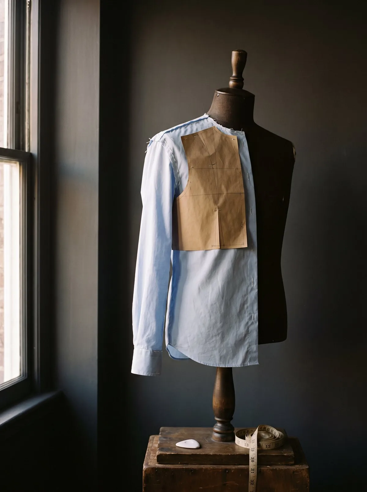

Made to Measure
The garment that already knows you.
Over thirty measurements, taken once. A pattern cut for one person alone.
Read the chapter
The first time we measure a client, we take over thirty individual measurements. Not because thirty is an impressive number, but because no two people stand, move, or carry themselves in quite the same way.
Every commission begins with conversation: how you live, how you work, what has never felt quite right, and what finally should. Only then do we guide you through cloth, considering not just its appearance, but its weight, texture, drape, and how it will accompany you through your days.
In our atelier, every pattern is cut for one individual alone. There are quicker ways to make a shirt. We have simply never found one that preserved the integrity of the craft.